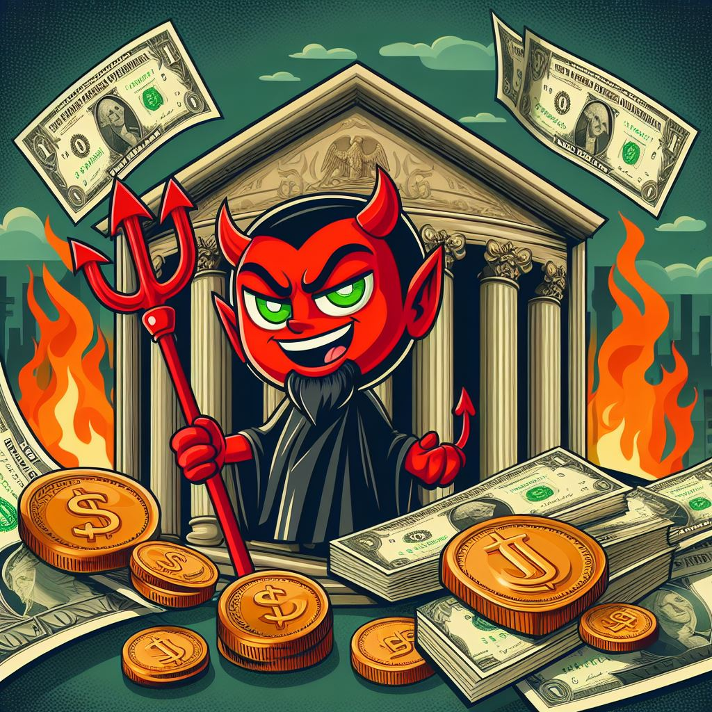

Daobolic Project Info
Daobolic harnesses the power of meme-driven momentum on the Solana blockchain. With a limited supply of 1,069,000,000 tokens, a 1,000,000,000 initial LP, a renounced contract, and burned LP, Daobolic secures value and trust for holders.

Team Info
Razerface is the lead Dev and visionary behind Daobolic. With 12 years immersed in crypto, including 6 years of hands-on developing, moderating, trading, and building projects, Razerface possesses the expertise to guide this project to long-term success in tandem with the ever-evolving world of Bitcoin mining. If you have the passion to join this epic journey, reach out for a potential role on the team!